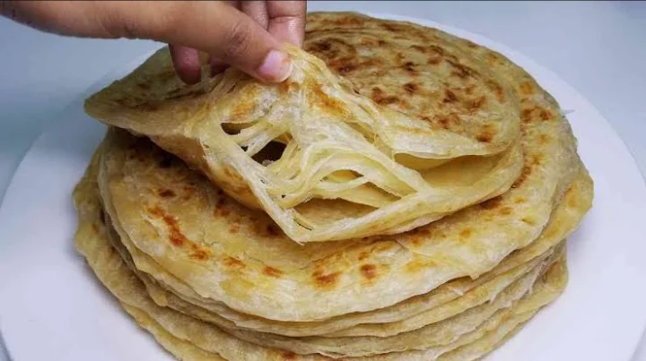

Chapatis

Description
This is a very common dish eating at
all diffrent meal times.It can be had
in the morning with tea, lunch or dinner
with stew or any such dish
Ingredients Needed
- 3 cups of flour
- 1 1/2 cups of warm water
- 1 tsp of salt
- Extra rapsolja or any vegatable oil
for frying
Steps Needed
- Add 3 cups of flour in a bowl.
- Add salt, sugar, 2 tbsp of
oil and 1 1/2 cups of water in a
separate jar/bowl. Stir until salt
and sugar dissolves.
- Add the liquid mixture in
step 2 in the flour bowl(step1)
and mix well
- Keep kneading for 10 minutes and
add flour if needed until the dough
becomes non-sticky.Add 2-3 tbsp of oil
and continue kneading until the oil
mixes well and the dough is soft.Cover
the dough and leave it for 40 minutes
- After the 40 minutes, divide the
dough into 10-15 equal parts making ball
like shapes.Arrange them in a flat surface
dusted with flour(cover with damp tablecloth
to avoid drying).
- Dust flour in the flat place and take one
of the balls and start rolling with a rolling
pin to a circular shape,brush oil on top and
roll it inwards to form a shape-like a rope,
then create a coil-like shape and press the
ball down with your palm to make it flat. Repeat
this process to the rest of the remaining balls
of dough.
- Next, start rolling each of the coil-like
shape doughs with the rolling pin to form a
circular shape again.
- In a hot pan,place the rolled out circular
chapati and fry each side with little oil until
its golden brown on meduim heat.Place your cooked
chapatis in a flat plat and cover with aluminum foil.
- Repeat this step to the rest of the coil-like dough